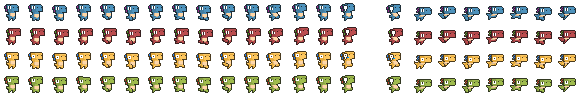
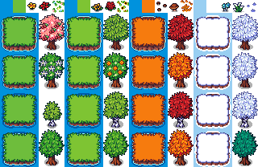
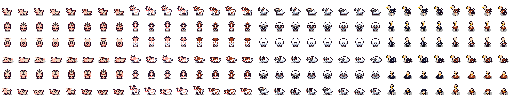

DinoRanch est un projet de jeu 2D d'arcade de 1 à 4 joueurs en local. Le jeu est en vue du dessus. Les joueurs incarnent chacun un dinosaure. Les dinosaures doivent capturer des animaux en tournant autour. Les animaux capturés donnent des points. Plus la prise est grosse, plus il y a de points. La partie s'arrête quand le chronomètre arrive à sa fin, et les points sont décomptés.
Fonctionnalités
Chaque fonctionnalité est détaillée par des étapes de plus en plus difficiles. Des indications sont données pour accélérer le développement sur les aspects non-programmation.
F1. Les dinosaures
- Un dinosaure est affiché et peut être déplacé (directions + bouton de course
btn_right).
- L'affichage du dinosaure est mis en miroir s'il se déplace vers la gauche (= échanger les positions U).
- L'affichage du dinosaure est animé suivant ses déplacements.
- Le dinosaure peut se prendre des dégâts (= immobilisation 3 secondes + animation).
- 4 dinosaures sont affichables et individuellement déplaçables.
- Tous les dinosaures sont affichés avec un seul draw call.
- Les dinosaures peuvent être devant les autres et être affichés suivant lequel est devant.
Les images de dinosaures sont dans la spritesheet dinosaurs.png, disposées sur une grille de 24x24 pixels.

Texture des dinosaures
Les animations consistent à enchaîner en boucle différents sprites. Dans la spritesheet, ces sprites correspondent à des positions U :
- U=(0, 24, 48, 72) pour l'animation quand le dinosaure reste sur place. (8 images par seconde)
- U=(96, 120, 144, 168, 192, 216) pour l'animation de marche. (8 images par seconde)
- U=(336, 360, 384) pour l'animation de dégâts. (8 images par seconde)
- U=(432, 456, 480, 504, 528, 552) pour l'animation de course. (16 images par seconde)
Les dinosaures de différentes couleurs correspondent à des positions V :
- V=0 pour le dinosaure bleu
- V=24 pour le dinosaure rouge
- V=48 pour le dinosaure jaune
- V=72 pour le dinosaure vert
F2. Le terrain
- L'océan est affiché sur toute la fenêtre, et une zone centrale de terrain de 320x320 pixels.
- La frontière terrain/océan est dessinée avec le tileset et animée.
- Des fleurs sont positionnées sur le terrain aléatoirement à chaque début de partie.
- Le terrain peut avoir quatre saisons différentes.
- Des arbres sont positionnés sur le terrain aléatoirement à chaque début de partie. Les dinosaures peuvent être devant et derrière les arbres.
Les images du terrain sont dans le tileset terrain.png.

Texture du terrain
Les tuiles du tileset font une taille de 16x16 pixels. Le terrain de 320x320 pixels correspond donc à un carré de 20 tuiles de large. Les arbres font une taille de 48x72 pixels.
La spritesheet est composée de :
- UV = (0,0) pour la couleur de l'océan
- UV = (16,0) pour la couleur du terrain
- UV = (0,16) pour la tuile du coin en haut à gauche
- UV = (32,16) pour la tuile du coin en haut à droite
- UV = (0,48) pour la tuile du coin en bas à gauche
- UV = (32,48) pour la tuile du coin en bas à droite
- UV = (16,16) pour la tuile à répéter sur la frontière en haut
- UV = (0,32) pour la tuile à répéter sur la frontière à gauche
- UV = (32,32) pour la tuile à répéter sur la frontière à droite
- UV = (16,48) pour la tuile à répéter sur la frontière en bas
- UV = (32,0) pour la fleur 1
- UV = (48,0) pour la fleur 2
- UV = (64,0) pour la fleur 3
- UV = (de 48,16 à 80,64) pour l'arbre 1
- UV = (de 48,64 à 80,112) pour l'arbre 2
- UV = (de 48,112 à 80,160) pour l'arbre 3
- UV = (de 48,160 à 80,208) pour l'arbre 4
Pour obtenir les animations des tuiles de terrain, il faut ajouter dans l'ordre V += (0, 48, 96, 144).
Pour obtenir les saisons, il faut ajouter dans l'ordre U += (0, 80, 160, 240).
F3. Les animaux
- Des animaux apparaissent au hasard sur le terrain (1 par seconde).
- Les animaux se déplacent aléatoirement et sont correctement animés.
- Pendant l'apparition, les animaux passent d'invisible à transparent à opaque.
- Les animaux se déplacent suivant le concept de boïds (uniquement en suivant la même espèce).
- De plus, les cochons ont tendance à s'approcher des joueurs, les moutons ont tendance à s'éloigner, les vaches bougent lentement et les autruches bougent rapidement.
Les images d'animaux sont dans la spritesheet animals.png.

Texture des animaux
Chaque sprite fait une taille de 32x32 pixels.
Les animations consistent à enchaîner en boucle 4 sprites, suivant les positions U=(0, 32, 64, 96).
Les différentes animations correspondent à des positions V :
- V = 0 pour marcher sur le côté (à mettre en miroir pour aller vers la droite)
- V = 32 pour marcher vers le bas
- V = 64 pour marcher vers le haut
Les différents animaux correspondent à des décalage de positions U :
- U += 0 ou 128 pour les deux types de cochon.
- U += 256 ou 384 pour les deux types de vache.
- U += 512 ou 640 pour les deux types de mouton.
- U += 768 ou 896 pour les deux types d'autruche.
La simulation de boïds (bird-oïds) est un moyen simple de créer des essaims d'oiseaux, bancs de poisson et mouvements de foule, cf. Wikipédia. Dans le cas des animaux, on veut que chaque espèce (cochon, vache, mouton, autruche) soit simulée indépendamment.
F4. Lasso
- Des suites de points dessinées correspondant aux positions passées des dinosaures, aux couleurs des dinosaures.
- Les suites de points ne grandissent que quand la touche
btn_down est pressée, et sont vidées quand la touche est relâchée.
- Les suites de points sont tronquées à une longueur maximale.
- Quand deux segments se coupent et sont du même joueur, la boucle est retirée du lasso (mais la partie avant la boucle existe toujours).
- Quand deux segments se coupent et sont de joueurs différents, les parties des lassos derrière l'intersection sont retirées.
F5. Scoring et chronomètre
- Un chronomètre de 3 minutes s'affiche en haut de l'écran et décroit.
- Le score des dinosaures s'affichent aux coins de l'écran.
- Les dinosaures peuvent gagner des points : un "+100" s'affiche au-dessus d'eux un court instant.
F6. Interactions
- Les dinosaures ne peuvent pas sortir des limites du terrain.
- Quand les dinosaures et animaux (entre eux) sont en collision (distance entre les centres des sprites > 16 pixels), ils se repoussent.
- Plus le chronomètre est bas, et plus les animaux apparaissent vite.
- Quand un dinosaure est dans une boucle de lasso, il se prend des dégâts (= immobilisation 3 secondes + animation).
- Quand des animaux sont dans une boucle de lasso, ils disparaissent.
- Quand les animaux disparaissent, des points sont crédités au dinosaure.
F7. Menu
- Sur l'écran principal, le titre du jeu est affiché, ainsi que le texte "Appuyez sur le bouton START ou la touche ESPACE pour commencer." Le jeu se lance une fois START ou ESPACE appuyé.
- À la fin du chronomètre, un écran de classement s'affiche avec les scores des joueurs, et le texte "Appuyez sur le bouton START ou la touche ESPACE pour recommencer."
- Quand un joueur appuie sur START ou ESPACE sur l'écran principal, une ligne de texte s'affiche, indiquant "CLAVIER" ou "MANETTE 1...4". Les joueurs peuvent choisir leurs dinosaures avec
dpad. Quand tous les joueurs appuient une seconde fois sur START ou ESPACE, le jeu se lance.